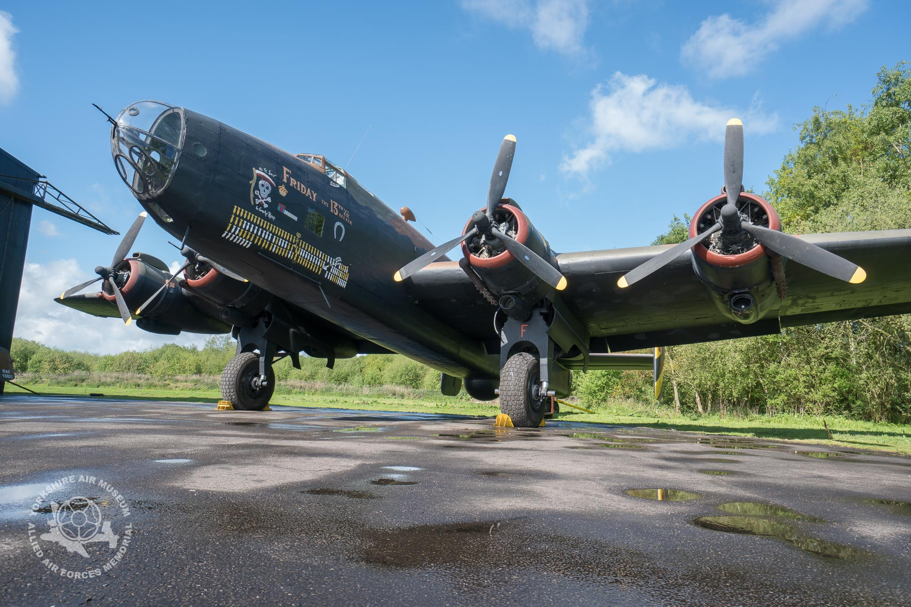

The Halifax was a plane with four Bristol Hercules XVI Radial engines it is long about 21.82 meters, high 6.32 meters, with a wing area of approximatly 110.60 meters and weighed about 26 tons all charge whith its 5,800 ibs bombs and 2,242 imp of fuel with a maximum speed of 265 miles per hour at an altitude of 17,500 feet. the Halifax was biukt foir 6 years from 1940 and 1946 and with over 6,176 models produced in those 6 years but was outclassed by the AVRO LANCHESTER
